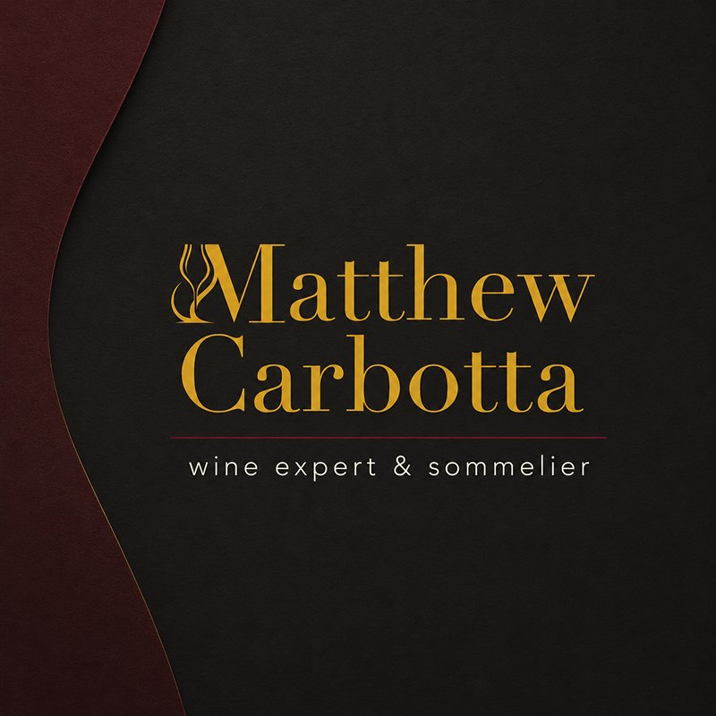
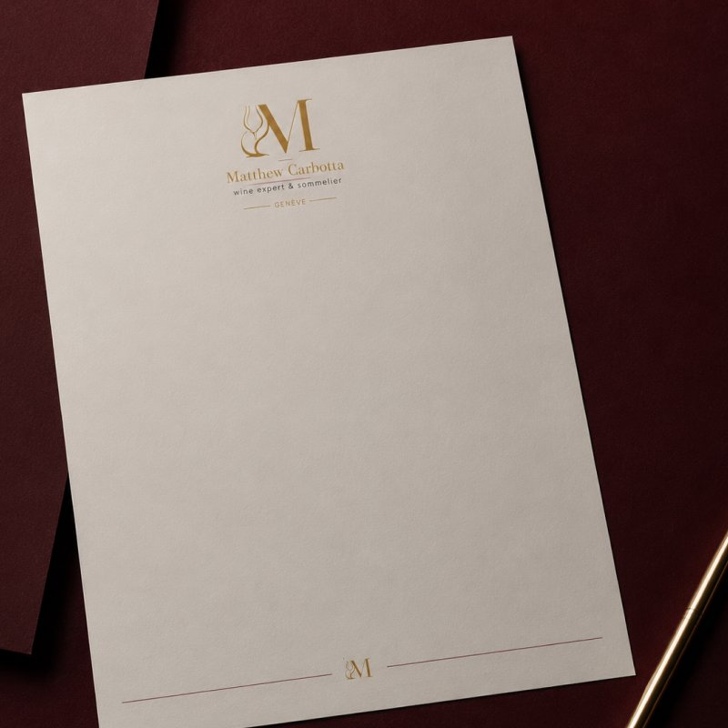

Matthew Carbotta
Logo design and brand identity

One figure, many roles — one sign only.
Matthew Carbotta is a sommelier, manager of two restaurants in Geneva, founder of a wine distribution company and organiser of private wine tasting events.
His identity had to hold all these declinations together without losing the centre — a personal authority that precedes and crosses every professional role.
"The chalice has unique symbolic power — from religion to the Holy Grail, it is a source of power, seduction, offering and discovery. It already had everything to become a brand."


The silhouette of the chalice merges with Matthew's M, generating a unique logotype — recognisable as a signature and usable as an autonomous monogram. A sign that doesn't illustrate wine: it evokes it through form, weight, presence. It works large on an event sign and small on the back of a business card.
The system is built to grow with Matthew's professional figure. At the centre the monogram — a sign strong enough to work alone on any surface. Around it, a palette of golden burgundy, grey-black and warm pearl white that defines the brand's chromatic territory without overloading it. Typography pairs Didot — a serif of French tradition with extreme contrast between thicks and thins — with Avenir Next for functional declinations. An essential module today, ready to expand into a more articulated system over time.



